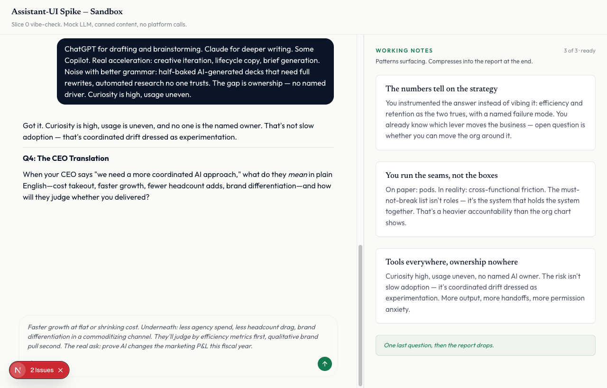
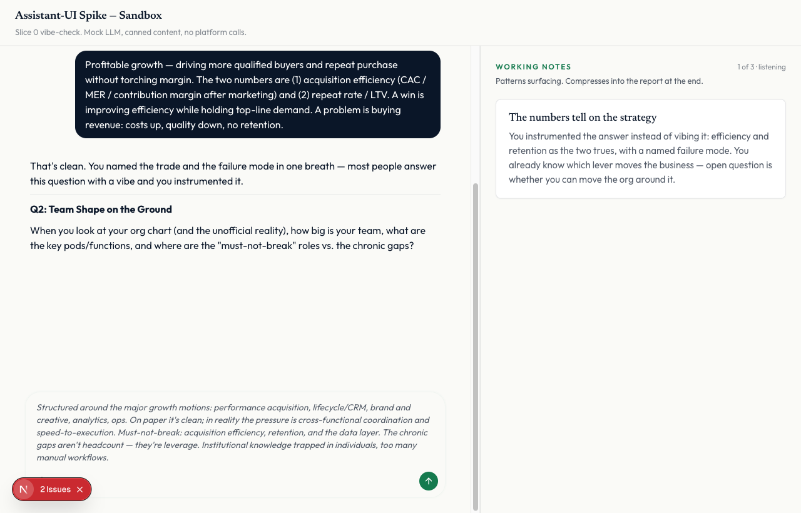

Mirror-next · Slice 0 spike
A scrappy experiment on two axes.
We poked at two things at once on the same surface. On the stack axis: assistant-ui + Vercel AI SDK + AI Gateway, instead of the ThinkWAI platform mirror runs on today. On the surface axis: a live side-by-side chat + artifact layout, instead of the single-column flow with a separate report page. No verdicts here — just what it looked like.

What this is
Mirror is the existing product — an AI-driven interview that produces an Insights Snapshot. It runs in production today on the ThinkWAI platform, in a single-column chat flow that hands off to a separate report page.
This walkthrough is a scrappy spike — a few days of poking, not a real build. The interview is the existing one. The stack underneath and the layout around it are both experimental. The conversation is scripted (mock LLM, hand-written replies, composer pre-filled and locked read-only) so the demo plays the same every time.
What we poked at
Two things, on the same surface, at once.
The stack underneath.
- Picking up assistant-ui as the chat scaffold and seeing how close to on-brand it gets without forking the package.
- Driving the conversation from the Vercel AI SDK + AI Gateway path, with zero calls to the ThinkWAI platform.
- Noticing which deviations from upstream assistant-ui were unavoidable, and what they cost.
The layout around it.
- Live chat on the left, a sidecar artifact pane on the right — instead of single-column chat handing off to a separate page.
- Working notes accumulating in the right pane as the conversation goes.
- The Insights Snapshot landing in the same pane instead of on its own page.
- Copy / Download / Print affordances inline on the artifact.
The arc below is the spike playing through. Skip to What we saw if you want the observations first.
A note on assistant-ui
assistant-ui is an open-source React chat scaffold. Picking it up for the spike gave us the entire conversation surface — message stream, composer, dictation hook, accessibility, mobile behaviour — in hours rather than the day or two of hand-building.
Worth noting: the layout questions above are independent of the scaffold. Every UI element in this walkthrough is framework-agnostic. If we ever wanted the same surface without assistant-ui, we could rebuild it in our own packages without re-running this exploration.
The four beats
Click a thumbnail to jump to that step. Or use ← → to cycle through, Esc to collapse all.
The interviewer opens with a contextualised one-paragraph frame, sets a time expectation (~20 minutes), and asks Q1 — what you are accountable for this quarter and what would count as a win versus a problem. The voice is direct: no warmth, no throat-clearing, no AI-chat tics.
The right pane shows a soft "LISTENING" state with a pulse — signalling to the user that the interview is paying attention, and that observations will surface here as the conversation unfolds. The composer at the bottom is already filled in with the expected user reply (italic gray) and locked read-only, so the demo runs on a script and reviewers can see exactly what a real subject would say.
The interviewer asks Q2 (team shape) and then Q3 (AI in the wild). Each answer triggers a working note in the right pane — not a paraphrase of what the user said, but a sharper read of the pattern underneath it. The composer auto-rewrites between turns, keeping the demo on rails.
By the second note, the cumulative read is starting to look like a thesis. A stakeholder reading the transcript later can already see where the conversation is heading — without the interviewer ever breaking its neutral-question stance.

After Q2 — one note surfaces.
After Q3 — pattern accumulates.
All three working notes are now visible. Below them, a soft accent-tinted cue strip reads "One last question, then the report drops" — telling the user the interview is wrapping up before they hear it from the interviewer itself. That parallel signalling is one of the things we wanted to test here: does the sidecar pane carry useful pacing information alongside the chat?
In the chat, Q4 is the closing question — what does the CEO actually want from AI in plain English, and how will they judge whether you delivered. The composer is pre-filled with the expected reply.
After the user's reply to Q4, the interviewer delivers a brief synthesis handoff in the chat — "I have what I need. Drafting your snapshot now." The right pane holds for a short drafting beat (about three seconds of "SYNTHESIZING"), then the Insights Snapshot streams in: a forensic, second-person read structured as a title, a thesis quote, three escalating insights (Task → Role → Identity), each ending in a bolded verdict sentence, and a two-line kicker callback.
The voice is the production mirror-next register: cold clarity, surgical, no reassurance. The snapshot is intentionally short enough to read in one sitting and sharp enough to be quotable. The Copy, Download, and Print buttons in the top-right of the pane are all client-only — no scaffold changes were needed. Download writes a timestamped markdown file; Print opens a browser print dialog that shows only the report.